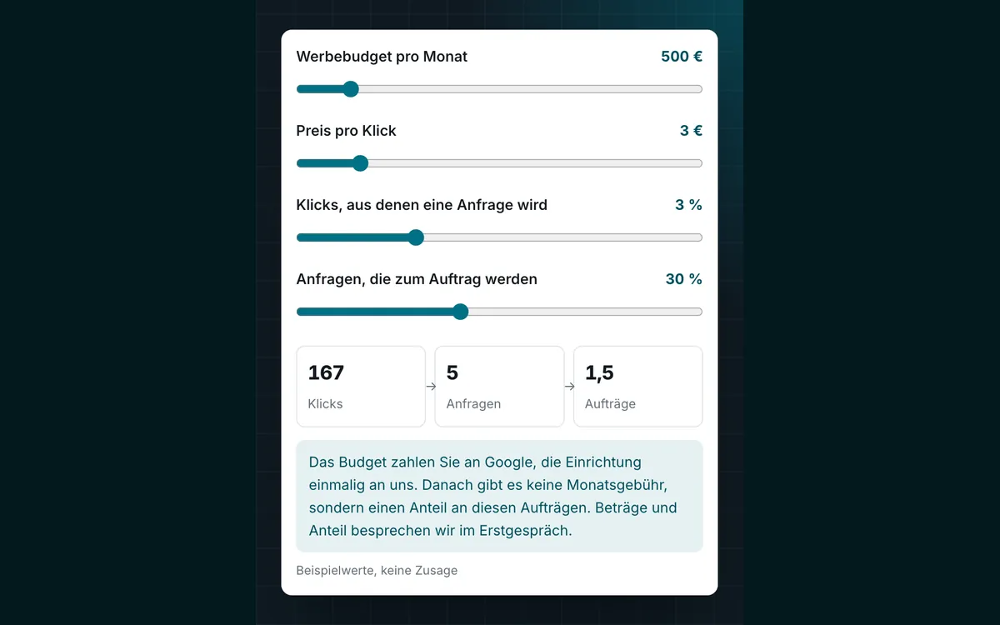

Google-Ads-Betreuung auf Beteiligung: Wir verdienen erst an Aufträgen aus Ihren Anzeigen.
Sie zahlen das Werbebudget direkt an Google. Wir planen und betreuen Ihre Kampagnen und werden an den Aufträgen beteiligt, die über die Anzeigen kommen. Damit wollen wir dasselbe wie Sie: Anfragen, aus denen Aufträge werden.
- Budget
- zahlen Sie direkt an Google
- Anteil
- an Aufträgen aus den Anzeigen
- Seit 2002
- IT-Systemhaus in Lehre
Google-Ads-Betreuung, die sich an Aufträgen messen lässt
Google Ads kann schnell Besucher bringen. Ob daraus Aufträge werden, ist eine andere Frage. Läuft ein Konto mit einer einzigen Kampagne für alle Leistungen und ein großes Gebiet, geht das Budget leicht an die billigsten Klicks. Die kommen nicht unbedingt von den Kunden, die Sie suchen. Am Monatsende weiß dann niemand genau, welcher Auftrag aus der Werbung kam.
Ob Sie eine Google-Ads-Agentur, eine SEA-Agentur oder einen Google-Ads-Experten suchen, eine Frage lohnt sich immer: Woran verdient der Betreuer? Bei einer festen Monatsgebühr wird die Arbeit bezahlt, egal was sie bringt. Wir lassen uns stattdessen an den Aufträgen beteiligen, die über Ihre Anzeigen kommen.
Eine Performance-Marketing-Agentur richtet Werbung an messbaren Ergebnissen aus. Wir richten auch unsere eigene Bezahlung daran aus. Dahinter steht ein IT-Systemhaus aus Lehre, das seit 2002 mehr als 500 Unternehmen betreut hat.
So funktioniert die Beteiligung
Drei Teile, sauber getrennt: Ihr Budget, die Messung der Anfragen und unser Anteil an den Aufträgen.
Ihr Werbebudget
Sie bestimmen, wie viel Sie im Monat für Klicks ausgeben.
- Das Konto läuft auf Ihr Unternehmen
- Google rechnet das Budget direkt mit Ihnen ab
- Kein Aufschlag von uns auf die Klickpreise
Zahlen Sie direkt an Google
Messung der Anfragen
Damit beide Seiten wissen, welche Anfrage aus der Werbung kam.
- Anrufe aus den Anzeigen werden getrennt erfasst
- Formular auf der Zielseite, das die Quelle mitschickt
- Monatlicher Abgleich mit Ihren Aufträgen
- Bericht für jede Kampagne
Richten wir vor dem Start ein
Unsere Beteiligung
Ein Anteil an den Aufträgen, die über die Anzeigen kommen.
- Gezählt werden Aufträge aus Anzeigen-Anfragen
- Grundlage ist der monatliche Abgleich
- Was als Auftrag zählt, steht vorab im Vertrag
Konditionen im Erstgespräch
Was wir in Ihrem Google-Ads-Konto erledigen
Kampagnen nach Leistung und Gebiet
Wichtige Leistungen und Gebiete bekommen eigene Kampagnen mit eigenem Budget. So sehen Sie, was sich lohnt, und ein billiger Klick aus der Ferne verdrängt nicht den Kunden in Ihrer Nähe.
Höchstgebote nach Auftragswert
Wir legen fest, was ein Klick höchstens kosten darf. Maßstab ist, was ein Auftrag Ihnen bringt, nicht der Vorschlag von Google.
Ausschlüsse
Wir prüfen regelmäßig, bei welchen Suchen Ihre Anzeige erschien, und schließen Unpassendes aus, etwa Suchen nach Jobs oder Anleitungen.
Anzeigen mit Anrufknopf
Kurze Texte mit Leistung, Ort und Telefonnummer. Wer auf dem Handy sucht, kann direkt aus der Anzeige anrufen.
Zielseiten für die Anzeigen
Die Anzeige führt auf eine Seite zur gesuchten Leistung, nicht auf die Startseite. Ist die ganze Website in die Jahre gekommen, hilft unser Webdesign zum Festpreis.
Berichte in klarer Sprache
Einmal im Monat Kosten, Klicks, Anfragen und Aufträge je Kampagne, dazu was wir geändert haben und warum.
Vom Erstgespräch zur ersten Anzeige
Bevor ein Euro an Google geht, kennen Sie den Plan, die Prognose und die Konditionen.
Erstgespräch
Welche Leistungen sollen beworben werden, in welchem Gebiet, und was ist ein Auftrag im Schnitt wert? Wie viele zusätzliche Aufträge können Sie annehmen?
Kampagnenplan mit Prognose
Aus Suchanfragen und Klickpreisen im Keyword-Planer von Google rechnen wir Klicks und Kosten je Kampagne hoch. Eine Prognose, keine Zusage.
Einrichtung
Konto, Kampagnen, Zielseiten und die Messung der Anrufe und Formulare. Sie sehen die Anzeigen vor dem Start und geben sie frei.
Start und Abgleich
Wir passen Gebote und Ausschlüsse laufend an. Einmal im Monat gleichen wir die Anfragen mit Ihren Aufträgen ab.
Was sich mit der Beteiligung ändert
Betreuung gegen Monatsgebühr
- Bezahlt wird die Betreuung, nicht das Ergebnis
- Die Gebühr kommt jeden Monat, auch ohne Auftrag
- Das Risiko schwacher Kampagnen liegt bei Ihnen
- Welche Anfrage zum Auftrag wurde, spielt für die Rechnung keine Rolle
Betreuung auf Beteiligung bei STKom
- Bezahlt wird über Aufträge aus den Anzeigen
- Ohne Auftrag aus den Anzeigen verdienen wir nichts
- Das Risiko schwacher Kampagnen tragen wir mit
- Anfragen aus den Anzeigen werden gezählt und mit Ihren Aufträgen abgeglichen

Für wen sich das Modell eignet und für wen nicht
Passt gut
Für Betriebe mit klar abgegrenzten Aufträgen, etwa im Handwerk, bei Dienstleistern vor Ort oder bei Anbietern für Geschäftskunden. Wichtig sind ein Auftragswert, bei dem sich ein Klick rechnet, und genug freie Kapazität, um zusätzliche Anfragen auch anzunehmen.
Passt nicht
Wenn sich Aufträge keiner Anfrage zuordnen lassen, etwa bei vielen kleinen Bestellungen im Onlineshop. Wenn ein Auftrag weniger bringt, als die Klicks bis dahin kosten. Wenn Sie ohnehin ausgebucht sind. Oder wenn es um Bekanntheit statt um Anfragen geht. Dann sagen wir das im Erstgespräch und schlagen eher SEO oder eine bessere Website vor.
Was wir von Ihnen brauchen
Nehmen Sie Anfragen aus den Anzeigen schnell an, am Telefon oder per Rückruf. Melden Sie uns einmal im Monat, welche Anfragen zum Auftrag wurden. Und klicken Sie bitte nicht selbst auf Ihre Anzeigen, um sie zu prüfen, denn jeder Klick kostet Budget. Wir zeigen sie Ihnen stattdessen in einer Vorschau.
Wir betreuen Betriebe in ganz Deutschland per Video und Telefon. Zwischen Braunschweig und Wolfsburg kommen wir zum Erstgespräch auch zu Ihnen, beide Städte erreichen wir von Lehre aus in etwa 20 Minuten.
Häufige Fragen zur Google-Ads-Betreuung
Was kostet die Google-Ads-Betreuung bei STKom?
Sie zahlen das Werbebudget direkt an Google, die Höhe bestimmen Sie. Wir verdienen über eine Beteiligung an den Aufträgen, die über die Anzeigen kommen. Wie hoch der Anteil ist und wie lange die Vereinbarung läuft, besprechen wir im Erstgespräch und halten es schriftlich fest.
Wie viel Werbebudget brauche ich?
Das hängt vom Klickpreis in Ihrer Branche und Ihrem Gebiet ab. Vor dem Start rechnen wir mit Daten aus dem Keyword-Planer von Google aus, wie viele Klicks ein Budget ungefähr bringt. Wir beginnen überschaubar und erhöhen erst, wenn die Zahlen es rechtfertigen.
Welche Aufträge zählen für die Beteiligung?
Aufträge aus Anfragen, die nachweislich über die Anzeigen kamen, also ein Anruf, der über die Anzeigen erfasst wurde, oder eine Formularanfrage mit Anzeigen-Quelle. Was im Einzelfall gilt, etwa bei Kunden, die Sie schon kennen, legen wir vor dem Start im Vertrag fest.
Gehört das Google-Ads-Konto mir?
Ja. Das Konto läuft auf Ihr Unternehmen und Ihr Zahlungsmittel, wir arbeiten mit einem Zugang als Betreuer. Endet die Zusammenarbeit, bleiben Konto, Kampagnen und Daten bei Ihnen.
Sagen Sie eine Position oder eine Zahl an Anfragen zu?
Nein. Wo eine Anzeige erscheint und was ein Klick kostet, entscheidet Google in einer Auktion. Wie viele Besucher anfragen, hängt auch von Ihrem Angebot und Ihrer Website ab. Zusagen können wir eine saubere Einrichtung, laufende Pflege und nachvollziehbare Zahlen.
Ich habe schon ein Google-Ads-Konto. Übernehmen Sie es?
Ja. Vor dem Erstgespräch sehen wir uns das Konto mit einem Lesezugang an: Aufbau der Kampagnen, Gebiete, Suchbegriffe und Messung. Im Gespräch sagen wir Ihnen, was wir ändern würden und ob sich die Beteiligung rechnet.
Passt oft dazu
Google Ads auf Beteiligung? Wir rechnen es mit Ihnen durch.
Nennen Sie uns kurz Ihre Leistungen, Ihr Gebiet und den üblichen Auftragswert. Wir melden uns zu unseren Geschäftszeiten und sagen Ihnen, ob sich Anzeigen für Sie lohnen.
- Telefon, Mo–Do 8:30–17:00 Uhr, Fr 8:30–15:30 Uhr05308 935030
- E-Mailinfo@stkom.de
- AdresseBerliner Straße 60, 38165 Lehre